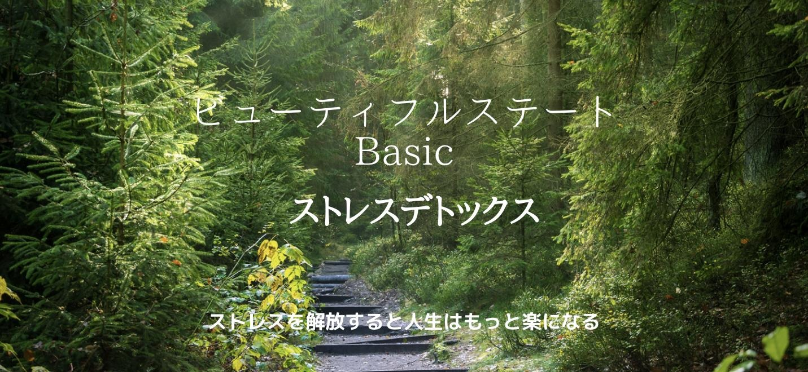
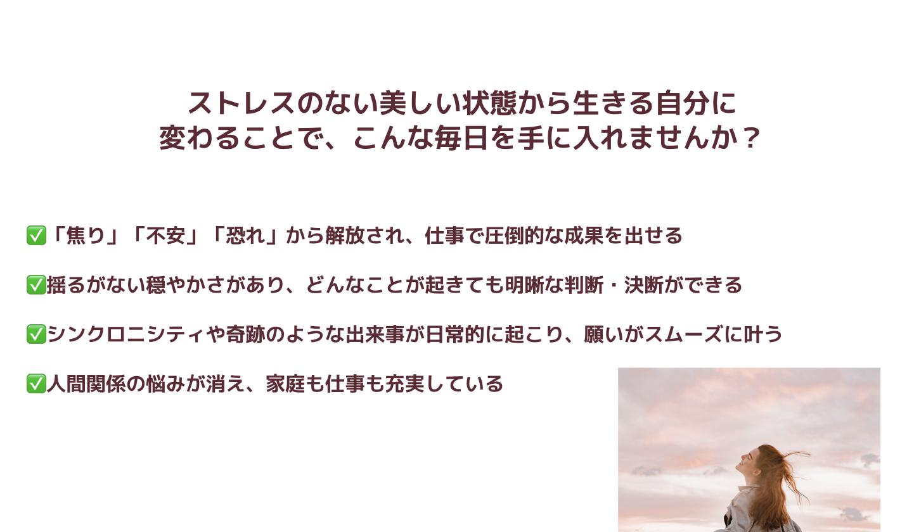
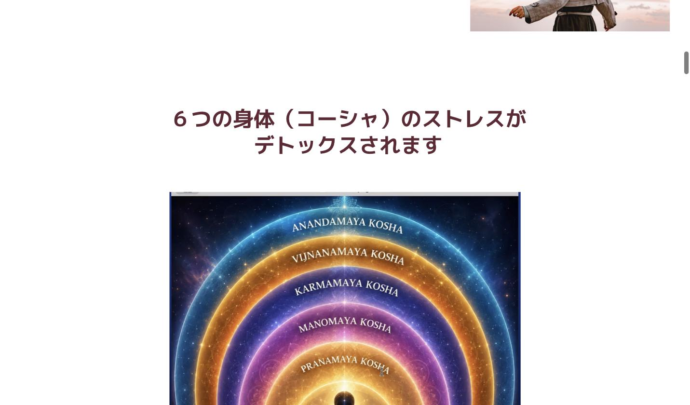
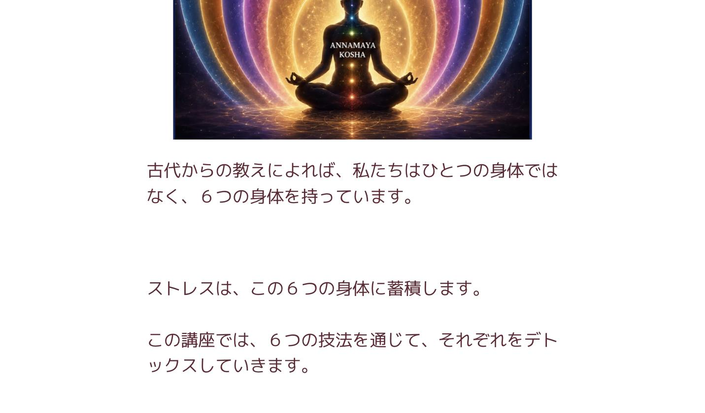
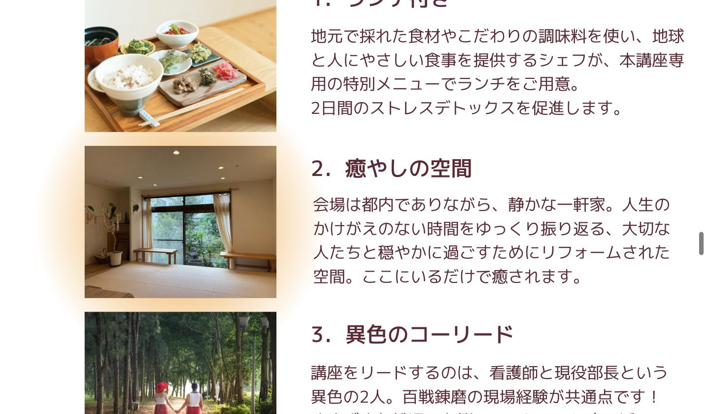
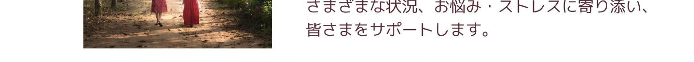
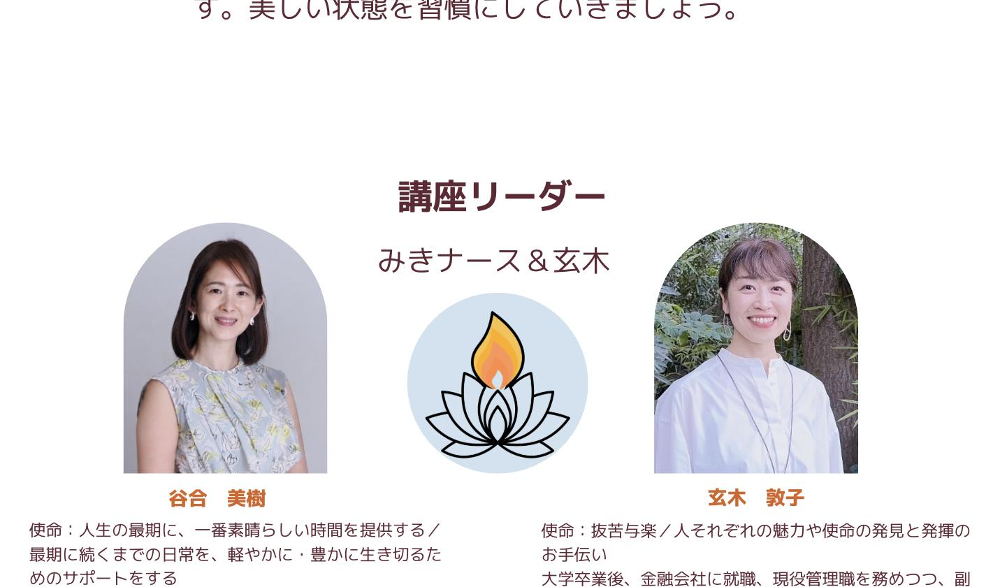
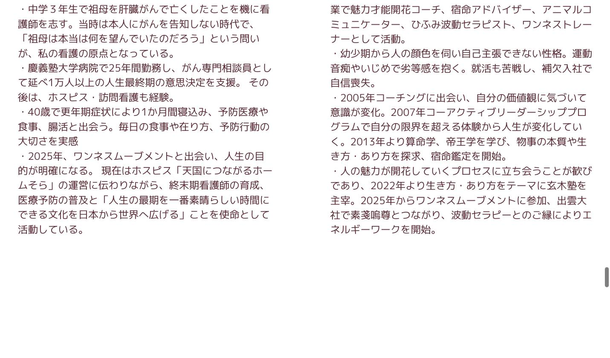
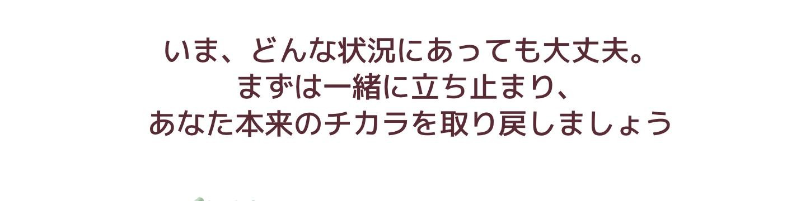
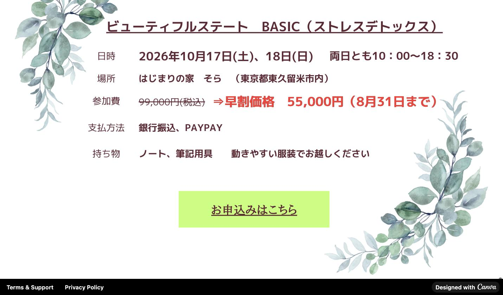

4．フォローアップ
講座でストレスをデトックスした後、日常に戻ってからがあなたの人生を変えていく本番です！3ヶ月間のフォローアップをオンラインで行います。美しい状態を習慣にしていきましょう。




身体の不調、病気、早すぎる老化
無気力、注意力の欠如
安らぎ、健康、活力、細胞レベルでの若返り
詰まったエネルギー、創造的表現の喪失、先の見えない停滞感
ブレイクスルーと新たな扉が人生に現れる
未解決の感情、過去の傷に囚われる、トラウマや恐れ
両親との関係性が癒される、人生が開かれていく
ネガティブなカルマの蓄積
人生が重く感じる
ネガティブなカルマからの解放、新たな機会を引き寄せる
無知、無意識の行動。
人生に制限を感じる
シンクロニシティや奇跡が流れてくる
人生が無味乾燥、喜びがすぐに薄れてしまう
あらゆる体験、人生が喜びに満ちたものになる


講座でストレスをデトックスした後、日常に戻ってからがあなたの人生を変えていく本番です！3ヶ月間のフォローアップをオンラインで行います。美しい状態を習慣にしていきましょう。


この講座を受けてから、ストレスは感じますが、溜まりにくくなりました！人の目が気にならなくなり、職場で苦手だった上司とも関係が改善しました。
親に対する怒りと諦めの感情があることに、はじめて気がつきました。ずっとしまっていた気持ちを穏やかに観察ができ、涙が止まりませんでした。
家族が病気になり、医療費も高額で心が落ち着かない毎日でしたが呼吸法を続けました。すると焦りが消え、医療費と同額の臨時収入が入ってきました。

